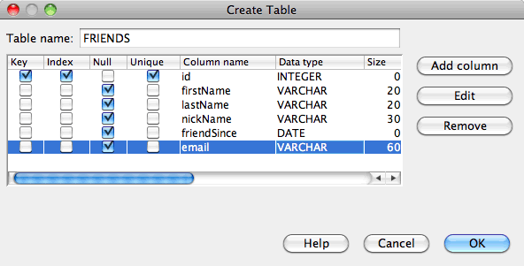
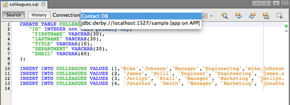

Apache NetBeans
Apache NetBeansLatest release
Trabalhando com o Banco de Dados Java DB (Derby)
| This tutorial needs a review. You can open a JIRA issue, or edit it in GitHub following these contribution guidelines. |
- Configurando o Banco de Dados
- Registrando o Banco de Dados no NetBeans IDE
- Iniciando o Servidor e Criando um Banco de Dados
- Estabelecendo Conexão com o Banco de Dados
- Criando Tabelas
- Adicionando Dados na Tabela
- Deletando Tabelas
- Usando um Script SQL Externo
- Recriando Tabelas de um Banco de Dados Diferente
- Consulte Também
Este documento demonstra como configurar uma conexão com o banco de dados Java DB no NetBeans IDE. Quando uma conexão for estabelecida, você poderá começar a trabalhar com o banco de dados no IDE, podendo criar tabelas, preenchê-las com dados, executar instruções SQL e consultas e mais.
O banco de dados Java DB é uma distribuição da Sun com suporte do Apache Derby. O Java DB é um servidor de banco de dados com base em padrões, seguro e totalmente transacional, escrito inteiramente em Java, e dá suporte total a SQL, JDBC API e à tecnologia Java EE. O banco de dados Java DB é encapsulado com o servidor de aplicações GlassFish e está incluído no JDK 6 também. Para obter mais informações sobre o banco de dados Java DB, consulte a documentação oficial.

Figure 1. O conteúdo desta página se aplica ao NetBeans IDE 7.2, 7.3, 7.4 e 8.0
| O Java DB é instalado quando o JDK 7 ou JDK 8 é instalado (com exceção do Mac OS X). Se estiver usando Mac OS X é possível fazer o download e instalar o Java DB manualmente ou usar o Java DB que é instalado pela versão do Java EE do instalador do NetBeans IDE. |
Configurando o Banco de Dados
Se você tem o GlassFish Server Enterprise registrado na instalação NetBeans IDE, o Java DB já estará registrado. Portanto, é possível pular para Iniciando o Servidor e Criando um Banco de Dados.
Se fizer download do GlassFish Server separadamente e necessitar de ajuda ao registrar no NetBeans IDE, consulte Registrando uma Instância do GlassFish Server no Conteúdo de Ajuda IDE (F1).
Se você tiver submetido o Java DB a download, siga as etapas a seguir.
-
Execute o arquivo de autoextração. Uma pasta denominada 'javadb' será criada no mesmo local do arquivo. Se você tiver apenas submetido o Java DB a download e desejar que o servidor de banco de dados fique em um local diferente de onde ele foi extraído, deverá realocá-lo agora.
-
No sistema, crie um novo diretório para ser utilizado como diretório home para as instâncias individuais do servidor de banco de dados. Por exemplo, é possível criar esta pasta no diretório-raiz Java DB (javadb) ou em qualquer outra localização.
Antes de prosseguir, é importante compreender os componentes encontrados no diretório raiz do Java DB:
-
O subdiretório
democontém os programas de demonstração. -
O subdiretório
bincontém os scripts para executar utilitários e configurar o ambiente. -
O subdiretório
javadoccontém a documentação da API que foi gerada de comentários de código-fonte. -
O subdiretório
docscontém a documentação do Java DB. -
O subdiretório
libcontém os arquivos jar do Java DB.
Registrando o Banco de Dados no NetBeans IDE
Agora que o banco de dados está configurado, execute as etapas a seguir para registrar o Java DB no IDE.
-
Na janela Serviços, clique com o botão direito do mouse no nó do Banco de Dados Java DB e escolha Propriedades para abrir a caixa de diálogo das Definições do Java DB.
-
No campo de texto Instalação de Java DB, insira o caminho para o diretório-raiz de Java DB (javadb) especificado na etapa anterior.
-
Para a Localização do Banco de Dados, use o local default se um local já foi fornecido. Clique em OK
Por exemplo, a localização default pode parecer com C:\Documents and Settings\username\.netbeans-derby em um computador Windows.

Figure 2. exemplo de definições default do servidor e banco de dados Java DB
Observação. Se o campo Localização do Banco de Dados estiver vazio será necessário definir o caminho para o diretório que contém seus bancos de dados. Será necessário criar um diretório para os bancos de dados se nenhum diretório existir.
Iniciando o Servidor e Criando um Banco de Dados
As opções de menu do Banco de Dados Java DB são exibidas quando você clica com o botão direito do mouse no nó Java DB na janela Serviços. Os itens desse menu contextual permitem o início e a interrupção do servidor de banco de dados, a criação de uma nova instância de banco de dados e o registro de servidores de bancos de dados no IDE (como demonstrado na etapa anterior). Para iniciar o servidor de banco de dados:
-
Na janela Serviços, clique com o botão direito do mouse no nó Java DB e escolha Iniciar Servidor. Observe a seguinte saída na janela de Saída, indicando que o servidor foi iniciado:

-
Clique com o botão direito do mouse no nó do Java DB e escolha Criar Banco de Dados para abrir a caixa de diálogo de criação do Banco de Dados do Java DB.
-
Insira
contatopara o Nome do Banco de Dados. -
Digite
nbuserpara o Nome de Usuário e a Senha. Clique em OK.

Observação. Localização do Banco de Dados é o local default definido durante a instalação do Java DB do GlassFish. Se você tiver instalado o Java DB separadamente, essa localização pode ser diferente.
Após você criar o Banco de Dados, se você expandir os bancos de dados nó na janela Serviços que você pode ver o IDE criada uma conexão de banco de dados e que o banco de dados foi adicionado à lista sob o nó do BD Java.
Estabelecendo Conexão com o Banco de Dados
Até agora, você iniciou com êxito o servidor de banco de dados e criou uma instância de banco de dados denominada contact no IDE. Na janela Serviços do IDE você pode realizar as seguintes tarefas comuns em estruturas de banco de dados.
-
criação, exclusão, modificação de tabelas
-
preenchimento de tabelas com dados
-
exibição de dados tabulares
-
execução de consultas e instruções SQL
Para começar a trabalhar com o banco de dados contact , você precisa criar uma conexão com o mesmo. Para estabelecer conexão com o banco de dados contato execute as etapas a seguir.
-
Expanda o nó do Bancos de Dados na janela Serviços e localize o novo banco de dados e os nós de conexão de banco de dados.
O nó de conexão do banco de dados(  ) é exibido no nó dos Bancos de Dados. O nó do banco de dados é exibido no nó do Java DB.
) é exibido no nó dos Bancos de Dados. O nó do banco de dados é exibido no nó do Java DB.

Observação. Você também visualizará a conexão do banco de dados amostra [app em app] que é o esquema do banco de dados default.
-
Clique com o botão direito do mouse no nó da conexão do banco de dados contact(
jdbc:derby://localhost:1527/contact [nbuser em NBUSER]) e escolha Conectar.
O ícone do nó da conexão aparecerá em todo ( ), significando que a conexão foi bem-sucedida.
), significando que a conexão foi bem-sucedida.
-
Crie um nome de exibição conveniente para o banco de dados clicando com o botão direito do mouse no nó da conexão do banco de dados (
jdbc:derby://localhost:1527/contact [nbuser on NBUSER]) e selecione Renomear. DigiteBD de Contatono campo de texto e clique em Ok.
Criando Tabelas
O banco de dados contact recém-criado está vazio no momento. Ele não contém ainda tabelas ou dados. No NetBeans IDE, você pode adicionar uma tabela de banco de dados usando a caixa de diálogo Criar Tabela ou inserindo uma instrução SQL e executando-a diretamente do Editor SQL. É possível explorar ambos os métodos:
Usando a Caixa de Diálogo Criar Tabela
-
Expanda o nó de conexão
BD de Contatoe observe que existem vários subnós do esquema. O esquema app é o único esquema que se aplica a este tutorial. Clique com o botão direito do mouse no nó APP e escolha Definir como Esquema Default.
-
Expanda o nó APP e observe que existem três subpastas: Tabelas, Views e Procedimentos. Clique com o botão direito no nó Tabelas e escolha Criar Tabela para abrir a caixa de diálogo Criar Tabela.
-
No campo de texto Nome da Tabela, digite
AMIGOS.
-
Clique em Adicionar Coluna. A caixa de diálogo Adicionar Coluna é exibida.
-
Para Nome de Coluna, insira
id. Para Tipo de Dados, selecioneINTEIROda lista drop-down.
-
Em Restrições, marque a caixa de seleção Chave Primária para especificar que essa coluna é a chave primária da tabela. Todas as tabelas de bancos de dados relacionais devem conter uma chave primária. Observe que quando você marca a caixa de seleção Chave Primária, as caixas de seleção Índice e Exclusivo são automaticamente marcadas e a caixa de seleção Nulo é desmarcada. Isso ocorre porque as chaves primárias são usadas para identificar uma linha exclusiva no banco de dados e por default são usadas como o índice da tabela. Como todas as linhas devem ser identificadas, as chaves primárias não podem conter um valor
Nulo.

-
Repita este procedimento agora especificando campos conforme exibido na tabela abaixo:
Chave |
Índice |
Nulo |
Exclusiva |
Nome da coluna |
Tipo de dados |
Tamanho |
[marcada] |
[marcada] |
[marcada] |
id |
INTEIRO |
0 |
[marcada] |
firstName |
VARCHAR |
20 |
[marcada] |
lastName |
VARCHAR |
20 |
[marcada] |
nickName |
VARCHAR |
30 |
[marcada] |
friendSince |
DATA |
Você está criando uma tabela chamada AMIGOS que contém os seguintes dados para cada registro de contato:
-
Nome
-
Sobrenome
-
Apelido
-
Amigo Desde
-
Endereço de E-mail

-
Quando tiver certeza que a caixa de diálogo Criar Tabela contém as mesmas especificações que as exibidas acima, clique em OK. O IDE gera a tabela
AMIGOSno banco de dados, e você pode ver um novo nó da tabelaAMIGOS( ) são exibidos no nó de Tabelas. Sob o nó da tabela as colunas (campos) são listadas, iniciando com a chave primária (
) são exibidos no nó de Tabelas. Sob o nó da tabela as colunas (campos) são listadas, iniciando com a chave primária ( ).
).

Usando o Editor SQL:
-
No janela Serviço, clique com o botão direito no nó de conexão
BD de Contatoou no nó Tabelas embaixo e escolha o Comando Executar. Uma tela em branco é aberta no Editor SQL na janela principal. -
Insira a seguinte consulta no Editor SQL. Esta é uma definição da tabela COLEGAS que você irá criar:
CREATE TABLE "COLLEAGUES" (
"ID" INTEGER not null primary key,
"FIRSTNAME" VARCHAR(30),
"LASTNAME" VARCHAR(30),
"TITLE" VARCHAR(10),
"DEPARTMENT" VARCHAR(20),
"EMAIL" VARCHAR(60)
);| instruções e consultas formadas no Editor SQL faz parse em SQL. A linguagem SQL utiliza regras de sintaxe estritas com as quais você deve estar familiarizado ao trabalhar no editor do IDE. A sintaxe do SQL também pode diferir dependendo do sistema de gerenciamento de banco de dados. Consulte o Manual de Referência do JavaDB para obter instruções específicas. |
-
Clique no botão Executar SQL (
 ) na barra de tarefas na parte superior do editor (Ctrl-Shift-E) para executar a consulta. Na janela de Saída (Ctrl-4), uma mensagem é exibida indicando que uma instrução foi executada com êxito.
) na barra de tarefas na parte superior do editor (Ctrl-Shift-E) para executar a consulta. Na janela de Saída (Ctrl-4), uma mensagem é exibida indicando que uma instrução foi executada com êxito.

-
Para verificar as alterações, clique com o botão direito no nó de conexão
BD de Contatona janela Serviços e escolha Atualizar. Isso atualiza o componente UI de Runtime para o status atual do banco de dados especificado. Esta etapa é necessária ao executar consultas do Editor SQL no NetBeans IDE. Observe que o novo nó da tabela COLEGAS () é exibida agora em Tabelas na janela Serviços.
Adicionando Dados na Tabela
Agora que você criou uma ou mais tabelas no banco de dados contact , pode começar a preenchê-lo com dados. Existem várias maneiras que você pode adicionar registros em sua tabela.
-
Escreva uma instrução SQL no Editor SQL que fornece um valor para cada campo presente no esquema da tabela.
-
Utilize o Editor SQL para adicionar registros à tabela.
-
Utilize um script SQL externo para importar registros para a tabela.
Leia as seções abaixo para aprender como utilizar todos os métodos de preenchimento da tabela AMIGOS com dados.
Executando uma Instrução SQL
-
Expanda as Tabelas no nó do
BD de Contatona janela Serviços, clique com o botão direito na tabelaAMIGOSe escolha executar comando para abrir a janela do Editor SQL. -
No Editor SQL, insira a seguinte instrução.
INSERT INTO APP.FRIENDS VALUES (1,'Theodore','Bagwell','T-Bag','2004-12-25','tbag@foxriver.com')Enquanto estiver digitando, é possível utilizar a funcionalidade autocompletar código do Editor SQL.
-
Clique com o botão direito do mouse no Editor SQL e escolha Executar Instrução. A janela de Saída exibe uma mensagem indicando que uma instrução foi executada com êxito.
-
Para verificar se o novo registro foi adicionado à tabela
AMIGOS, clique com o botão direito do mouse no nó da tabelaAMIGOSna janela Serviços e escolha Exibir Dados.
Quando você escolhe Exibir Dados, é gerada automaticamente no painel superior do Editor SQL uma consulta para selecionar todos os dados da tabela. Os resultados da instrução são exibidos no painel inferior do Editor de SQL. Nesse caso, a tabela AMIGOS é exibida no painel inferior. Observe que uma nova linha foi adicionada com os dados que você acabou de fornecer da instrução SQL.

Usando o Editor SQL
-
Clique com o botão direito no nó da tabela
AMIGOSe escolha Exibir Dados (se não tiver feito isso na última etapa da seção anterior). -
Clique no botão Inserir Registro(s) (
Alt-I) para adicionar uma linha. A caixa de diálogo Inserir Registros aparece.
-
Clique em cada célula e insira registros. Observe que para células com tipo de dados Data, é possível escolher uma data do calendário. Clique em OK quando tiver acabado.

No Editor SQL, é possível ordenar os resultados clicando na linha de cabeçalho, modifique e delete registros existentes e veja o script SQL para ações que estão sendo feitas no editor (o comando Exibir Script SQL do menu pop-up).
Deletando Tabelas
Na etapa a seguir, use um script SQL externo para criar uma nova tabela COLEGAS . Entretanto, uma tabela COLEGAS acabou de ser criada na seção Utilizando o Editor SQL acima. Para deixar claro que o script SQL realmente cria uma nova tabela, você pode deletar a tabela COLEGAS já criada agora. Para deletar uma tabela do banco de dados execute as seguintes etapas.
-
Expanda o nó Tabelas no nó de conexão do banco de dados na janela Serviços.
-
Clique com o botão direito do mouse na tabela que você deseja deletar e escolha Deletar.
Usando um Script SQL Externo
A emissão de comandos de um script SQL externo é uma forma popular de gerenciar o banco de dados. É possível já ter sido criado um script SQL em outro lugar, e deseja importá-lo para o NetBeans IDE para executá-lo em um banco de dados específico.
Neste exercício, o script criará uma nova tabela denominada COLEGAS e a preencherá com dados. Execute as seguintes etapas para executar o script no banco de dados contato .
-
Faça download de colleagues.sql em seu sistema local
-
Escolha Arquivo > Abrir Arquivo no menu principal do IDE. No browser de arquivos, vá até o local do arquivo
colleagues.sqlsalvo e clique em Abrir. O script se abre automaticamente no Editor SQL.
Se preferir, copie o conteúdo de colleagues.sql e, depois abra o editor SQL e cole o conteúdo do arquivo no editor SQL.
-
Certifique-se que sua conexão com
BD de Contatoesteja selecionada na caixa drop-down Conexão na barra de ferramentas na parte superior do editor.

-
Clique no botão Executar SQL (
) na barra de tarefas do Editor SQL. O script é executado no banco de dados selecionado e qualquer feedback é gerado na janela de Saída. -
Para verificar as alterações, clique com o botão direito no nó de conexão
BD de Contatona janela Serviços e escolha Atualizar. Observe que a nova tabelaCOLEGASdo script SQL agora é exibida como um nó de tabela emcontactna janela Serviços. -
Para exibir os dados contidos nas novas tabelas, clique com o botão direito na tabela
COLEGASe escolha Exibir Dados. Dessa maneira, você também pode comparar os dados tabulares com os dados contidos no script SQL para ver se eles coincidem.
Recriando Tabelas de um Banco de Dados Diferente
Se você tiver uma tabela de outro banco de dados que deseja recriar no banco de dados em que está trabalhando do NetBeans IDE, o IDE oferece uma ferramenta útil para isso. É necessário primeiro registrar o segundo banco de dados no IDE, de forma similar à que foi descrita no início deste tutorial. Para a finalidade deste tutorial, use o banco de dados de amostra incluído com o Java DB. Esse processo é realizado essencialmente em duas partes: primeiro você 'captura' a definição da tabela selecionada, depois pode recriar a tabela no banco de dados escolhido:
-
Estabeleça conexão com o banco de dados de
amostraclicando com o botão direito no nó de conexão nos Bancos de Dados na janela Serviços e escolhendo Conectar (o usuário e a senha éapp). -
Expanda o nó das Tabelas na conexão do banco de dados
amostra, clique com o botão direito do mouse na tabelaCLIENTEe escolha Obter Estrutura.

-
Na caixa de diálogo Obter Tabela exibida, especifique um local no computador para salvar o arquivo obtido que será criado. Clique em Salvar.
O arquivo obtido registra a definição de tabela da tabela selecionada.
-
Expanda o nó do esquema APP na conexão do banco de dados
BD de Contato, clique no nó Tabelas e escolha Recriar Tabela para abrir a caixa de diálogo Recriar Tabela. -
Na caixa de diálogo Recriar Tabela, navegue até o local no qual você salvou o arquivo de obtenção
CLIENTEe clique em Abrir para abrir a caixa de diálogo Nome da Tabela.

-
Neste ponto, é possível alterar o nome da tabela ou editar a definição da tabela. Do contrário, clique em OK para criar imediatamente a tabela no banco de dados
contact. Um novo nó de tabelaCLIENTEé exibido abaixo do nó de conexão BD deContato.

Se você exibir os dados na nova tabela CLIENTE você verá que não há registros no banco de dados, mas que a estrutura da tabela é idêntica à tabela que você obteve.
Consulte Também
Isto conclui o tutorial Trabalho com o Banco de Dados Java DB (Derby). Este tutorial demonstrou como configurar uma conexão com o banco de dados Java DB no NetBeans IDE. Em seguida, ele demonstrou como criar, exibir, modificar e deletar tabelas na janela Serviços do IDE. Ele também exibiu como trabalhar com o Editor SQL para adicionar dados em tabelas e usar a funcionalidade do IDE permitindo que você recriasse tabelas usando definições de outros bancos de dados.
Para tutoriais relacionados e mais avançados, consulte os seguintes recursos:
-
Estabelecendo Conexão com um Banco de Dados MySQL. Demonstra como configurar um banco de dados MySQL e conectar-se a ele no NetBeans IDE.
-
Criando uma Aplicação Web Simples Usando um Banco de Dados MySQL. Demonstra como criar uma aplicação Web simples que se conecta com um servidor de banco de dados MySQL.
-
Tutorial da Aplicação CRUD da Plataforma do NetBeans. Demonstra como integrar um banco de dados Java DB com uma aplicação da Plataforma do NetBeans.